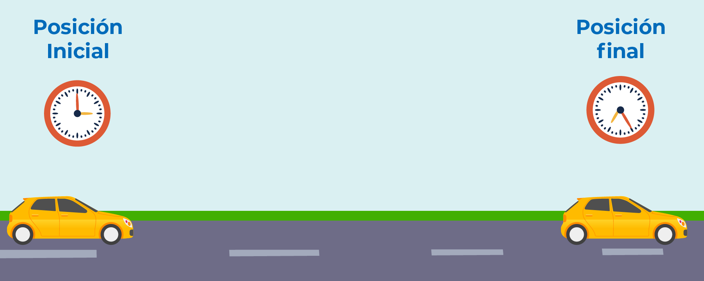
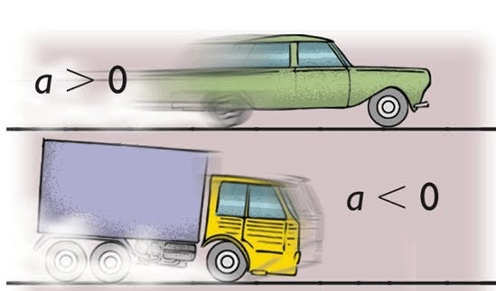

Calcular Distancia La distancia recorrida por un objeto en movimiento se puede calcular con la velocidad inicial, el tiempo y la aceleración constante.  Velocidad Inicial (m/s): Aceleración (m/s²): Tiempo (s): Calcular Calcular Aceleración La aceleración se calcula a partir de la variación de la velocidad en un intervalo de tiempo.  Velocidad Inicial (m/s): Velocidad Final (m/s): Tiempo (s): Calcular Calcular Velocidad Final La velocidad final se obtiene al añadir la aceleración a la velocidad inicial durante un tiempo dado. Velocidad Inicial (m/s): Aceleración (m/s²): Tiempo (s): Calcular